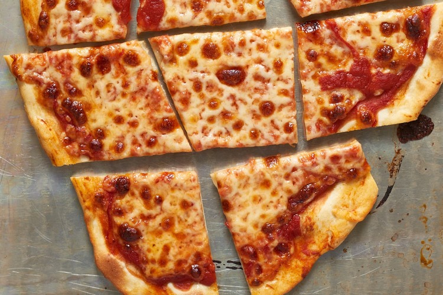

Thin Crust Pizza

Description
Need a thin, cracker pizza to go with that crispy IPA. Look no further.
Ingredients
- 3/4 cup lukewarm water
- 1 teaspoon active dry yeast
- 2 cups all-purpose four, plus more for kneading
- 3/4 teaspoon salt
- 2 teaspoons olive oil, divided
For the toppings:
- 1/2 cup pizza sauce
- 1 to 2 cups shredded cheese: one or a combination of mozzarella, provolone, Parmesan, fontina, romano, or asiago cheese
Steps
- Arrange a rack in the bottom third of the oven, place a rimmed baking sheet on the rack, and heat the oven to 450°F. Meanwhile, make the dough.
- Pour the water into a medium bowl. Sprinkle the yeast over the water, and let stand until the yeast is dissolved and foamy, 3 to 5 minutes
- Add the flour and salt. Mix with a stiff spatula or wooden spoon until floury, shaggy dough forms. Turn the dough out onto a work surface and knead
until it forms a smooth, slightly tacky ball that springs back when you poke it, 5 to 8 minutes. If the dough sticks to your hands like bubblegum,
add a tablespoon of flour at a time until it’s easier to work with; avoid adding too much flour if possible.
- Cover the dough with the upside-down bowl or a clean kitchen towel and let sit while you prepare the pizza toppings, about 10 minutes.
- Divide the dough into 2 equal pieces. Working with one piece of dough at a time, stretch or roll it into a thin, 10- to 12-inch round. Form from the
middle of the dough outwards, using the heel of your hand to gently press and stretch the dough until it's about a 1/4-inch thick or less. For an
extra-thin crust, roll it with a rolling pin. If the dough starts to shrink back, let it rest for 5 minutes and then try rolling again.
- Carefully remove the preheated baking sheet from the oven and place it upside down on a wire rack. Transfer the dough directly onto the upside-down
baking sheet. Brush the dough with 1 teaspoon of the oil. Spread 1/4 cup sauce into a thin layer onto dough, leaving a 1/2-inch border. Sprinkle on
the cheese and other toppings.
- Bake until the crust is golden-brown and the cheese is melted and browned in spots, 8 to 12 minutes. Remove the pizza from the oven and cool for about
5 minutes before slicing and serving. Repeat with the remaining dough and toppings.